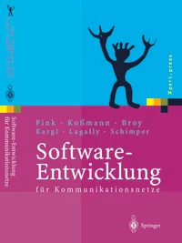
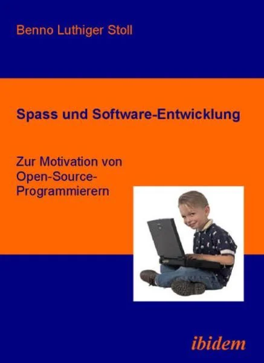

1. Buchtitel: Guidebook für Software Engineers Autor: Gergely Orosz Zitat: „Nicht alle, die wandern, sind verloren.“ Bild: Link: Webseite
2. Buchtitel: Software-Entwicklung für Kommunikationsnetze Autor: Axel Pink, Heinz Kossmann Zitat: „Tu was du willst.“ Bild:  Link: Webseite
3. Buchtitel: Spaß und Software-Entwicklung Autor: Benno Luthiger Stoll Zitat: „Es ist nicht gut, wenn wir nur in Träumen leben und vergessen zu leben.“ Bild:  Link: Webseite